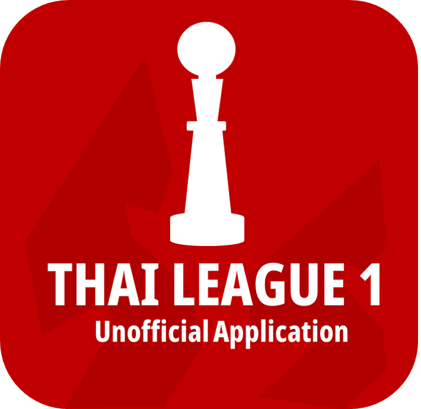

Thaileague 1 Unofficial Application
การจัดทำครั้งนี้ไม่ได้เกี่ยวข้องกับบริษัท ไทยลีก จำกัด หรือ สมาคมกีฬาฟุตบอลแห่งประเทศ เพียงจัดทำโดยคนๆ หนึ่งซึ่งรักในฟุตบอลไทย และอยากจะเห็นฟุคตบอลไทยลีก กลับมาถูกพูดถึงกันอย่างกว้างขวางอีกครั้งเหมือนเมื่อหลายปีที่ผ่านมา
ด้วยสภาพทางเศรษฐกิจ หรือ ซุปเปอร์สตาร์ เราเข้าใจดี ว่าตอนนี้การจะให้คนมาติดตามไทยลีกระดับฟีเวอร์ อย่างที่เกิดขึ้นเมื่อ 4-5 ปีก่อน อาจจะทำได้ไม่ง่ายนัก แต่ด้วยการการบริหารที่เป็นมืออาชีพขึ้น ทั้งฝั่งลีก ฝั่งผู้จัด และสโมสร แบรนด์ดิ้ง หรือมาร์เก็ตติ้งต่างๆ เชื่อแน่ว่าไทยลีก หรือ T1 ก็จะยังคงสามารถพัฒนาต่อไปได้เรื่อยๆ
ในเมื่อไทยลีก คือลีกสูงสุดเพียงลีกเดียวในประเทศไทย
ผมในฐานะคนไทยคนหนึ่งก็อยากจะทำอะไรซักอย่าง เผื่อจะมีประโยชน์ไม่มากก็น้อย ต่อวงการฟุตบอลไทย จึงเป็นที่มาของ Thai League 1 Unofficial Application ที่จะรวบรวมข้อมูลเกี่ยวกับไทยลีกไว้ในแอพเดียว ซึ่งด้วยทรัพยากรคน และประสิทธิภาพในการ Coding ต่างๆ เราไม่ได้มีความสามารถเพียงพอ ดังนั้นอาจจะทำให้บางครั้งข้อมูลมีการล่าช้าบ้าง ยังเป็นเพียงแค่แอพพลิเคชั่นที่ทำงานด้วยการลิ้งค์ผ่านเว็บไซต์ แต่ก็มีแผนที่จะปรับปรุง และพัฒนา เพื่อให้ได้เป็นแอพพลิเคชั่นจริงๆ และมีประสิทธิภาพในอนาคต จนกว่าทางไทยลีก จะออก Official Application ออกมา